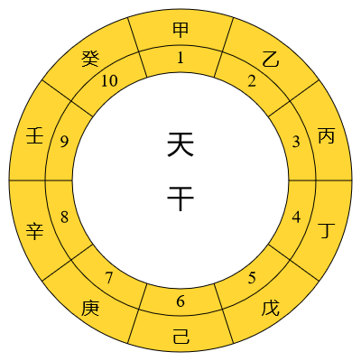
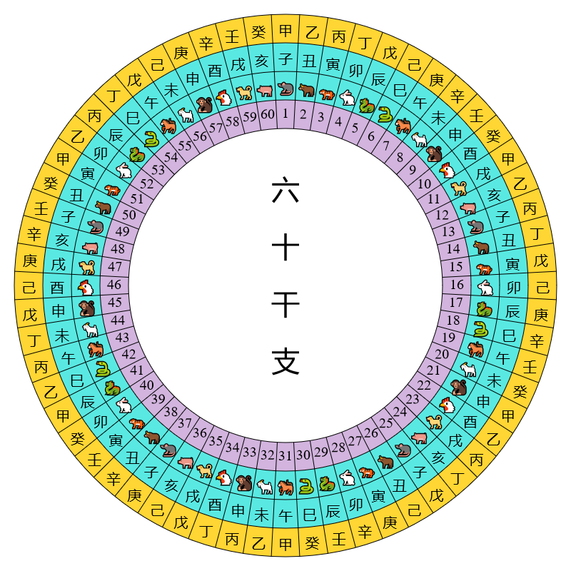

六 十 干 支
初稿: 2018年10月 最近一次重大修訂: 2019年7月7日
干支是中國傳統的紀數系統，現在還在使用。干支紀數是由天干和地支組合。天干有十個，地支有十二個，每一個地支有一種動物與之對應，稱為生肖或屬相。下表列出所有天干﹑地支及其對應的十二生肖。
| 天干 | 地支 | 生肖 | ||
|---|---|---|---|---|
| 1 | 甲 | 1 | 子 | 鼠 |
| 2 | 乙 | 2 | 丑 | 牛 |
| 3 | 丙 | 3 | 寅 | 虎 |
| 4 | 丁 | 4 | 卯 | 兔 |
| 5 | 戊 | 5 | 辰 | 龍 |
| 6 | 己 | 6 | 巳 | 蛇 |
| 7 | 庚 | 7 | 午 | 馬 |
| 8 | 辛 | 8 | 未 | 羊 |
| 9 | 壬 | 9 | 申 | 猴 |
| 10 | 癸 | 10 | 酉 | 雞 |
| 11 | 戌 | 狗 | ||
| 12 | 亥 | 豬 | ||
干支紀數由甲子(1,1)起，然後是乙丑(2,2)、丙寅(3,3)、丁卯(4,4)……癸酉(10,10)。到癸酉時天干用盡了，之後的規則是凡是天干或地支用盡後須從頭數起，所以癸酉之後是甲戌(1,11)、乙亥(2,12)、丙子等等直到癸亥(10,12)。癸亥後的干支是甲子(1,1)，然後是乙丑(2,2)等等循環不息。如下表所示，從甲子到癸亥一共有六十個干支。
| 1 | 甲子 | 16 | 己卯 | 31 | 甲午 | 46 | 己酉 |
| 2 | 乙丑 | 17 | 庚辰 | 32 | 乙未 | 47 | 庚戌 |
| 3 | 丙寅 | 18 | 辛巳 | 33 | 丙申 | 48 | 辛亥 |
| 4 | 丁卯 | 19 | 壬午 | 34 | 丁酉 | 49 | 壬子 |
| 5 | 戊辰 | 20 | 癸未 | 35 | 戊戌 | 50 | 癸丑 |
| 6 | 己巳 | 21 | 甲申 | 36 | 己亥 | 51 | 甲寅 |
| 7 | 庚午 | 22 | 乙酉 | 37 | 庚子 | 52 | 乙卯 |
| 8 | 辛未 | 23 | 丙戌 | 38 | 辛丑 | 53 | 丙辰 |
| 9 | 壬申 | 24 | 丁亥 | 39 | 壬寅 | 54 | 丁巳 |
| 10 | 癸酉 | 25 | 戊子 | 40 | 癸卯 | 55 | 戊午 |
| 11 | 甲戌 | 26 | 己丑 | 41 | 甲辰 | 56 | 己未 |
| 12 | 乙亥 | 27 | 庚寅 | 42 | 乙巳 | 57 | 庚申 |
| 13 | 丙子 | 28 | 辛卯 | 43 | 丙午 | 58 | 辛酉 |
| 14 | 丁丑 | 29 | 壬辰 | 44 | 丁未 | 59 | 壬戌 |
| 15 | 戊寅 | 30 | 癸巳 | 45 | 戊申 | 60 | 癸亥 |
由於干支數是循環的，表一和表二並非顯示干支的最好方法，較好的方法是將天干和地支排列在圓環之上:
 

從這些圖可見每一個天干、地支和干支組合地位平等，現在天干、地支和干支的數序只是根據傳統的習慣來定而已。
干支可用來紀年﹑紀月﹑紀日和紀時，但是現在已很少用干支來紀月﹑紀日和紀時了。下面簡略介紹如何用干支來紀年﹑紀月﹑紀日和紀時。
干 支 紀 年
現在的農曆年一般只用干支紀年，六十年循環一週。最近一週始於1984年農曆甲子年。其他公曆y年的農曆年干支可用同餘算術算出。所謂公曆y年的農曆年是指年首最接近公曆y年1月1日的農曆年。例如2018年的農曆年是指農曆戊戌年，始於公曆2018年2月16日，終於2019年2月4日。
農曆年的天干十年循環一週，年地支十二年循環一週。已知1984年的農曆年干支為甲子，以mod(X,Y)表示X除以Y後所得之餘數，可推出公曆y年之農曆年天干數為 1 + mod(y+6, 10)，即將公曆年數加六，除以十，然後把所得的餘數加一。年地支數為 1 + mod(y+8, 12)。依此可算出2018年之農曆年天干數為五，即戊，地支數為十一，即戌。所以2018年之農曆年干支是戊戌。
月 建 和 「三 正」
月建是指農曆月的地支名，但不計閏月，閏月沒有月建。由於一年有十二個月(不計閏月)，每一個月有固定的月建。建子月取含冬至的月份，建丑月是下一個月(不計閏月)，餘類推。月建在早期曆法頗為重要。
傳說早期各朝代以不同的月建作為一年的年首。據說夏代以建寅(即現在的正月)的月份為第一個月;商朝以建丑(即現在的十二月)為第一個月;周朝以建子的月份(現在的十一月)為第一個月。每次更改月份次序，就把更改後的第一個月稱為「正月」，「正」是改正的意思。所以夏正為建寅，殷正為建丑，周正為建子。夏正﹑殷正和周正稱為「三正」。
現在一般認為三正之傳說不可信。戰國時代，各國施行不同曆法，當時通行的曆法主要有六種:周曆、魯曆、殷曆、夏曆、黃帝曆和顓頊曆，合稱「古六曆」。六曆之名並非是不同時期不同朝代所制定，而是戰國時期的曆法家托古而作。所謂「三正」，只是指夏曆、殷曆和周曆所用的三個不同年首。所以「三正」不是夏商周三朝交替使用的曆法年首，而是春秋戰國時期不同地域施行曆法的三個不同年首。
秦朝的曆法和顓頊曆很接近，兩者都是以建亥(現在的十月)作為一年之始，但仍依夏曆稱建亥為十月，曆法的月序是十月、十一月、十二月、正月、二月……九月。漢朝建立後基本上沿用秦曆，直到漢武帝太初元年(公元前104年)才頒行新曆法，以建寅(正月)為年首。此後二千多年來，除了王莽和魏明帝一度改用殷正，武則天和唐肅宗一度改用周正外，一般都用夏正，到現在仍通行。
最後要指出，「建」是指北斗七星的斗柄，即玉衡、開陽和瑤光三星(見圖一)。方位可用十二地支表示，方法是將地平圈分為十二等分來配十二地支，北方是子，東方是卯，南方是午，西方是酉(見圖二)。在古代，北斗七星比現在更接近北天極，在中原地區(約北緯35°)大約在唐朝以前斗柄全年都在地平線之上，那時冬至傍晚可見斗柄指向北(子)，所以含冬至的月份稱為建子。由於歲差的原故，現在北斗七星離北天極較遠。在中原地區，冬至傍晚瑤光在地平線以下，玉衡和開陽在北方地平線附近。現在要去到北緯41°以北的地方才可看到斗柄北指。北緯41°大概在現在的內蒙古呼和浩特市、河北省承德市、遼寧省錦州市等地區。

干 支 紀 月
干支紀月較為複雜，據維基百科所述，有兩種干支紀月法。我在年曆網頁裡使用了第一種紀月法。其實干支紀月即使在古代的史書和日曆裡也不常用，干支紀月最常用於占卜和風水。年曆網頁裡自漢武帝太初元年(公元前104年)起才註有月干支。這裡姑且也簡單介紹兩種干支紀月法。
第一種紀法
此一紀法以農曆月配干支，但不計閏月，閏月的干支取上一月的干支。紀法是把月建配上天干，六十月(即五年)循環一週。由於年天干的週期是十年，年干與月干有二對一的對應關係。例如年干為甲或己時，正月的干支必然是丙寅，二月是丁卯，其餘可以類推。下表列出月干支與年天干的關係。
| 年天干 | 正月 | 二月 | 三月 | 四月 | 五月 | 六月 | 七月 | 八月 | 九月 | 十月 | 十一月 | 十二月 |
|---|---|---|---|---|---|---|---|---|---|---|---|---|
| 甲、己 | 丙寅 | 丁卯 | 戊辰 | 己巳 | 庚午 | 辛未 | 壬申 | 癸酉 | 甲戌 | 乙亥 | 丙子 | 丁丑 |
| 乙、庚 | 戊寅 | 己卯 | 庚辰 | 辛巳 | 壬午 | 癸未 | 甲申 | 乙酉 | 丙戌 | 丁亥 | 戊子 | 己丑 |
| 丙、辛 | 庚寅 | 辛卯 | 壬辰 | 癸巳 | 甲午 | 乙未 | 丙申 | 丁酉 | 戊戌 | 己亥 | 庚子 | 辛丑 |
| 丁、壬 | 壬寅 | 癸卯 | 甲辰 | 乙巳 | 丙午 | 丁未 | 戊申 | 己酉 | 庚戌 | 辛亥 | 壬子 | 癸丑 |
| 戊、癸 | 甲寅 | 乙卯 | 丙辰 | 丁巳 | 戊午 | 己未 | 庚申 | 辛酉 | 壬戌 | 癸亥 | 甲子 | 乙丑 |
從上表可方便算出任何農曆年的月干支。例如2018年是農曆戊戌年，從上表可知年天干為戊的五月干支是戊午，所以戊戌年的五月干支是戊午。有《五虎遁月歌》歌訣以便記憶正(寅)月的月干與年干的關係: 甲己之年丙作初，乙庚之歲戊為頭，丙辛歲首從庚起，丁壬壬位順流行，若問戊癸何方法，甲寅之上好推求。
其實要算出某年的月干只需記住年干為甲時正月的月干是丙就可以了，其他月的月干可先計算其與甲年干的月數，然後用同餘算術推出其月干。這裡以戊戌年五月為例，戊是甲之後的四個天干，所以如果以甲年算起，戊年五月就是甲年的 (4×12+5) 或五十三月，戊年五月的天干是丙往下數第五十二個天干，由於mod(52, 10) = 2，即五十二除以十之餘數為二，丙以後的第二個天干是戊，所以戊戌年的五月的干支是戊午。
這種紀法為明朝和清朝欽天監編的官方曆書所採用(見存世明清曆書，例如明嘉靖三年大統曆、清康熙九年時憲曆等)，也用於近代曆書(例如《100年袖珍干支月曆》，劉寶琳(紫金山天文臺研究員)編，商務印書館(香港), 1993)。如上述，閏月沒有月建，據明清的曆書所載，閏月的月干支以月內之節氣劃分，節氣之前用前月的干支，節氣之後用下月的干支。例如清康熙九年閏二月，月內有節氣清分在閏二月十五，清明前用正月干支(己卯)，清明後用三月干支(庚辰)。
第二種紀法
這種紀法不依農曆的月份，而是根據二十四節氣分月。子月定為由大雪至小寒前一日，丑月定為由小寒至立春前一日等等。下表列出各月對應的節氣段，近似農曆月份，和近似的公曆日期。
| 月地支 | 節氣段 | 近似農曆月份 | 近似公曆日期 |
|---|---|---|---|
| 子 | 大雪至小寒前一日 | 十一月 | 12月7日–1月5日 |
| 丑 | 小寒至立春前一日 | 十二月 | 1月6日–2月3日 |
| 寅 | 立春至驚蟄前一日 | 正月 | 2月4日–3月5日 |
| 卯 | 驚蟄至清明前一日 | 二月 | 3月6日–4月4日 |
| 辰 | 清明至立夏前一日 | 三月 | 4月5日–5月5日 |
| 巳 | 立夏至芒種前一日 | 四月 | 5月6日–6月5日 |
| 午 | 芒種至小暑前一日 | 五月 | 6月6日–7月6日 |
| 未 | 小暑至立秋前一日 | 六月 | 7月7日–8月7日 |
| 申 | 立秋至白露前一日 | 七月 | 8月8日–9月7日 |
| 酉 | 白露至寒露前一日 | 八月 | 9月8日–10月7日 |
| 戌 | 寒露至立冬前一日 | 九月 | 10月8日–11月6日 |
| 亥 | 立冬至大雪前一日 | 十月 | 11月7日–12月6日 |
二十四節氣是根據太陽在天球上的位置而定，不考慮月相，所以是純陽曆。公曆也是純陽曆，所以以上各月的公曆日期每年最多只有一兩日之差。農曆是陰陽曆，既考慮月相也顧及太陽位置，以上各月的起始日期在農曆中可以有多至三十日的變動。
古代稱由冬至到下一個冬至的週期為歲，稱由農年正月初一到下一年正月初一的週期為年。所以歲是純陽曆的概念，而年則屬陰陽曆。一歲的週期是三百六十五或三百六十六日，平均值接近回歸年(365.242日)。一年的週期大約是三百五十四日(無閏月時)或約三百八十四日(有閏月時)。用這種節氣定月的法則，一歲有十二個月，每月大至有三十或三十一日，沒有閏月。月份配上天干，六十月(即五歲)循環一週。
干 支 紀 日
日干支以六十天循環一週。中國最遲從春秋魯隱公三年(公元前720年)起就有史藉用干支紀日，距今已有二千七百多年，其間干支紀日既沒有間斷，又沒有發生過錯亂。
日的干支可從該日的儒略日數以同餘算術推出。儒略日數是指從公元前4713年1月1日正午起算的積日，所以每日正午的儒略日數是整數。這裡沒有說明所用的時間標準(UT1 或地方時等)，是假設了起算時刻(公元前4713年1月1日正午)和每日正午所指的時刻用相同的時間標準。公曆某月日的儒略日數有公式計算(例如维基百科)，我也建立了儒略日數和日干支計算器網頁，提供公曆日期與儒略日數和日干支的轉換。
由於日干支的週期是六十天，只要知道某一儒略日數的日干支，便可用同餘算術推出儒略日數和日干支的關係。查2019年曆，得知公元2019年1月27日的日干支是甲子，而該日正午的儒略日數是2458511。從mod(2458511, 60) = 11，可推出某日正午儒略日數JD正午與日干支的關係是
日干支數 S=1+mod(JD正午-11, 60)。 (1)
此處干支數是指按上面表二所列的干支次序，即1代表甲子、2代表乙丑、3代表丙寅等等。若以T代表天干數及B代表地支數，即T和B是上面表一列出的天干和地支次序，則知道了S後便可用以下公式計算天干數和地支數:
T=1+mod(S-1, 10), B=1+mod(S-1, 12)。 (2)
干支數S雖然在古代曆法計算中有時有用，但我認為在大多數情況下是不必要的。天干數T和地支數B可以直接用JD正午計算。這可從日天干的週期是十天、日地支週期是十二天、以及上述JD正午=2458511對應的日干支是甲子(T=1、B=1)推出。從mod(2458511, 10) = 1及mod(2458511, 12) = 11得出以下公式:
T=1+mod(JD正午-1,10)， B=1+mod(JD正午+1,12)。 (3)
這公式甚為方便，尤其是我們用十進制，天干數T根本不用計算。T基本上就是JD正午的最後一個數位的數，唯一例外是如果該數是0，則T是10。現在看一算例:公元1781年3月13日正午的儒略日數是2371629，因此T=9，天干是壬;B=1+mod(2371630,12)=11，地支是戌，所以日干支是壬戌。
順帶一提，用JD正午也很容易計算星期。星期的週期是七天，已知2019年1月27日是星期日、JD正午=2458511、mod(2458511, 7)=6，由此可推出星期數W和JD正午的關係如下:
W = mod(JD正午+1, 7) (4)
星期數W=0代表星期日、W=1代表星期一、W=2代表星期二等等。年曆網頁的星期就是用公式(4)計算。
又順帶一提，知道了干支數S後，天干數T和地支數B可用公式(2)輕易計算。反過來，知道天干數T和地支數B後，要求干支數S就要解以下的同餘方程:
S ≡ T (mod 10), S ≡ B (mod 12)。
此處≡符號表示同餘。上面公式是說S-T可被10整除、S-B可被12整除。如果不熟悉同餘算術，要找出一條算式來表示S也許會有點困難。對於某一特定的T和B，當然可以查表二找到答案。如果認為查表二等於「作弊」，可以用以下公式計算:
先算 k=6T-5B，如果k>0，則 S=k; 如果k≤0，則 S=k+60。也可以證明k>0等同於T≥B，k≤0等同於T<B，而T-B必定是偶數。[1]
以上面算出的壬戌干支為例，T=9、B=11，k=6×9-5×11=-1，所以S=59，正是表二列出壬戌的干支次序。
以上所述的同餘算術問題並不難。我沒有正式學過同餘算術理論，但仍能輕易求出其解，原因是求解過程中不須要用到如大衍求一術這樣精妙的算法[2]。稍為艱難的算題見於《孫子算經》，即著明的「物不知數」算題:[3]「今有物不知其數，三三數之剩二，五五數之剩三，七七數之剩二。問物幾何？」用現代數學算式表示，就是要求一整數x，使得
x ≡ 2 (mod 3)， x ≡ 3 (mod 5)， x ≡ 2 (mod 7)。
中國古代學者在計算曆法時遇到了不少同餘算術問題(尤其是計算上元積年)，很可能因此深入研究同餘算術，發現了著明的孫子定理，西方稱為「中國剩餘定理」。
干 支 紀 時
古時將一日分為十二時辰。用現在通用的時間系統來說，一時辰相當於現在的二小時。十二時辰正好配十二地支，所以時辰一般只提地支，不理天干。以現時通用的時間系統來說，子時是晚上十一時至凌晨一時，丑時是凌晨一時至三時，其餘可以類推。
十二時辰配上天干後，就有六十時辰(即五日)的週期。日干的週期是十日，所以日干與時干有二對一的對應關係，頗似年干與月干的關係。日干與時干也有類似的對照表，但我認為只須知道日干為甲的子時天干是甲就可以了，其他時干可用同餘算術推出。這裡以丁日的未時為例，丁是甲之後的第三個天干，未是第八個地支，丁日的未時即從甲日算起的第(3×12 + 8)個時辰，即第四十四個時辰，所以其天干是從甲起往下數四十三個天干，四十三除以十餘數是三，甲之後第三個天干是丁，所以丁日未時的時辰干支是丁未。
備 註
[1] 要驗證S的公式確能滿足方程(2)不難。首先是把S的公式寫成:
S = 6T - 5B + 60n，如果T≥B，則n=0;如果T<B，則n=1。
由於T和B之差必是偶數，可把B寫成B=T+2j，這裡j是某整數，把此式代入S的公式便得:
S = T - 10j + 60n。由於10j和60n都可被10整除，所以
mod(S-1, 10) = mod(T-1, 10) = T-1。
這公式符合方程(2)的左邊公式。最後一個等式成立是因為T-1是0和9之間的整數。
用T=B-2j代入S的公式得出
S = B - 12j + 60n。由於12j和60n都可被12整除，所以
mod(S-1, 12) = mod(B-1, 12) = B-1，符合方程(2)的右邊公式。
[2] 我的推導方法是把S的同餘方程寫成以下公式:
S=T+10i, S = B+12j, i和j是某整數。
⇒ T+10i = B+12 j
⇒ 6j-5i = (T-B)/2.
i=j=(T-B)/2顯然是一解，所以
S = T+10i = T+5(T-B) = 6T-5B，但當T<B時，此數是負數或0，所以此時要加上60使S規範在1和60之間。
這推導中最關鍵的一步是求兩整數p和q滿足方程6p-5q=1。求得p和q後，乘(T-B)/2就得i和j。這方程相當簡單，p=q=1明顯是一解。如果要解的方程是aj-bi=1而a和b是其他整數，或許不會那麼容易猜到答案，那時就要用大衍求一術求解。
[3] 此算題相當著明，甚至連金庸武俠小說《射雕英雄傳》也引用。書中說郭靖和黃蓉離開瑛姑居所前，黃蓉出了三道算題考瑛姑，第三道題就是物不知數算題。後來黃蓉與瑛姑再碰面，問起那三道算題，瑛姑卻一道題也算不出，她對物不知數算題尤其感興趣:「這第三道題呢，說易是十分容易，說難卻又難到了極處……我知道這(答案)是二十三，不過那是硬湊出來的，要列一個每數皆可通用的算式，卻是想破了腦袋也想不出。」黃蓉於是說出答案:「以三三數之，餘數乘以七十；五五數之，餘數乘以二十一；七七數之，餘數乘十五。三者相加，如不大於一百零五，即為答數；否則須減去一百零五或其倍數。」
用現代數學的數式表示或會有助理解。用a、b、c表示未知數x被三、五、七除後所得之餘數，《孫子算經》給出的答案是
x = 70a + 21b + 15c - 105n，n是任意整數。
推導此式要用孫子定理，一般談論同餘算術的書藉或文章應該有論述(例如這篇文章)。但是要驗證這答案確能滿足算題的要求卻不難:由於21b、15c和105n都可被三整除，mod(x,3) = mod(70a, 3) = mod(3×23a+a,3) = mod(a,3)=a，用類此計算可得mod(x,5)=b及mod(x,7)=c。